Extract the results of the ULIFT task
for the UPLIFT project. This code was comissioned by Prof. A. De Groef and Prof. L. De Beats for the UPLIFT-BC project that analyses movement in people who survived breast cancer. This is the main file for the analysis of the ULIFT data collected within that project and spefied to only run that data.
code written by: dr. Jill Emmerzaal (jillemmerzaal@gmail.com) last update v1 14/11/2022 functions needed for this script:
- MVN.m
- load_mvnx.m
- peakfinder.m
- normalisation.m
Contents
- set input path
- input data
- 2. load data
- 2.1 Load xsens data
- 2.2 Define data needed for segmentation
- Step 1: define change points based on position data
- set counters
- Step 2: Start and end of the ULIFT task
- Step 3: End phase 1 and start phase 4
- in T_phase 1 and T_phase 4 should be 3 peaks of the posision data.
- middle phase 1
- middle phase 4
- display the results
- extract relevant kinematics
- clear certain variables
- Save data
- plot joint angle data
Analysis steps within this code input the data by setting the three folders.
- the current directory where the CODE is located
- the root folder where all the PARTICIPANTS are located
Then you will need to specify which time point you want to analyse and whether you want to plot the data (1) or not (0) And the range of subjects you want to run. (i.e. subj = (1) runs participant 1. subj = (1:10) runs subject 1 to 10. subj = (1:5, 7:10) runs subject 1 to 10 except subject 6.
clearvars; close all; clc
set input path
cd("C:\Users\u0117545\Documents\GitHub\ULIFT_BC\ULIFT") addpath("C:\Users\u0117545\Documents\GitHub\ULIFT_BC\ULIFT") path.root = 'C:\Users\u0117545\KU Leuven\An De Groef - DATA'; path.out = fullfile(path.root,'Output','Database_ULIFT.mat'); path.table = fullfile(path.root,'Output');
input data
Timepoint = 'T0'; movement = "ULIFT"; plot_or_not = 1; %diary myDiaryFile
2. load data
for subj = (1)
if subj < 10 subj_name = ['BC_00' num2str(subj)]; elseif subj < 100 subj_name = ['BC_0' num2str(subj)]; else subj_name = ['BC_', num2str(subj)]; end fprintf('\n') fprintf('Processing: %s at Timepoint: %s....... \n', subj_name, Timepoint) path.subj = fullfile(path.root, subj_name, 'Xsens', Timepoint, 'Reproces'); check_subj = exist(path.subj); if check_subj == 7 %T = readtable(fullfile(path.root, 'Output', [subj_name, '.xlsx'])); cd(path.subj) fprintf('\t current directory changed: %s \n', path.subj) %initialize counters counterR = 0; counterR_SSS = 0; counterL = 0; counterL_SSS = 0; counterRUN = 0; content = dir(path.subj); nfiles = size(content,1); % Start loop through ULIFT files per subject for file = 1:nfiles try % try to run the following code, if an error occurs % nothing will happen and no data will be exported. % A file will be created with the subject name and % timepoint that caused an error. if contains(content(file).name, movement) && contains(content(file).name, '.mvnx')
number = str2num(content(file).name(13:end-5));
file_ik = content(file).name;
[~,name, ~] = fileparts(content(file).name);
[fileName] = regexprep(name, '-', '_');
d = strfind(name,'_');
if size(d,2) == 1
arm = content(file).name(d+1);
elseif size(d,2) == 2
temp = content(file).name(d(2)+1);
arm = [temp, '_SSS']; % SSS = self-selected speed
clear temp
end
fprintf('\t Analysing: %s \n', fileName)
fprintf('\t\t Arm of interest: %s \n', arm)
Analysing: ULIFT_L_001 Arm of interest: L
Analysing: ULIFT_L_002 Arm of interest: L
Analysing: ULIFT_L_003 Arm of interest: L
Analysing: ULIFT_R_001 Arm of interest: R
Analysing: ULIFT_R_002 Arm of interest: R
Analysing: ULIFT_R_003 Arm of interest: R
Analysing: ULIFT_R_L_001 Arm of interest: L_SSS
Analysing: ULIFT_R_L_002 Arm of interest: L_SSS
Analysing: ULIFT_R_L_003 Arm of interest: L_SSS
Analysing: ULIFT_R_R_001 Arm of interest: R_SSS
Analysing: ULIFT_R_R_002 Arm of interest: R_SSS
Analysing: ULIFT_R_R_003 Arm of interest: R_SSS
2.1 Load xsens data
Change the filename here to the name of the file you would like to import
fprintf('\t \t %s: read xsens file \n', content(file).name) [sensorData, segmentData, jointData, tree]= MVN(file_ik); if isfield(tree, 'fileComments') fprintf('\t \t \t Comment in file: %s \n', tree.fileComments) end if contains(arm, 'L') jointno = 14; segmentno = 14; sensorno = 10; else jointno = 10; segmentno = 10; sensorno = 6; end
ULIFT_L-001.mvnx: read xsens file
ULIFT_L-002.mvnx: read xsens file
ULIFT_L-003.mvnx: read xsens file
ULIFT_R-001.mvnx: read xsens file

ULIFT_R-002.mvnx: read xsens file
ULIFT_R-003.mvnx: read xsens file
ULIFT_R_L-001.mvnx: read xsens file
ULIFT_R_L-002.mvnx: read xsens file
ULIFT_R_L-003.mvnx: read xsens file
ULIFT_R_R-001.mvnx: read xsens file
ULIFT_R_R-002.mvnx: read xsens file
ULIFT_R_R-003.mvnx: read xsens file
2.2 Define data needed for segmentation
%----------------------------------------- fprintf('\t \t %s: define start and end points \n', content(file).name) %filter data fc = 2; %cutoff freq fs = 60; %sample freq [b,a] = butter(2, fc/(fs/2)); position = filtfilt(b,a, segmentData(segmentno).position); positionX = position(:,1); positionY = position(:,2); positionZ = position(:,3); positionVec = vecnorm(position, 2,2); SensorFree = filtfilt(b,a, sensorData(sensorno).sensorFreeAcceleration); SensorFreeX = SensorFree(:,1); SensorFreeY = SensorFree(:,2); SensorFreeZ = SensorFree(:,3); SensorFreeVec = vecnorm(SensorFree,2,2); SensorFreeDiff = [diff(SensorFreeVec); 0]; angularVel_LA = filtfilt(b,a, segmentData(segmentno).angularVelocity); angularVelX = angularVel_LA(:,1); angularVelY = angularVel_LA(:,2); angularVelZ = angularVel_LA(:,3); angularVelVec = vecnorm(angularVel_LA, 2, 2); angularVelDiff = [diff(angularVelVec); 0]; % dataframes df.pos = table(positionX, positionY, positionZ, positionVec); df.SenAcc = table(SensorFreeX, SensorFreeY, SensorFreeZ, SensorFreeVec, SensorFreeDiff); df.Avel = table(angularVelX, angularVelY, angularVelZ, angularVelVec, angularVelDiff); clear position positionX positionY positionZ positionVec clear sensorFree sensorFreeX sensorFreeY SensorFreeZ sensorFreeVec SensorFreeDiff clear angularVel_X angularVelY angularVelZ angularVelVec angularVelDiff counterRUN = counterRUN + 1;
ULIFT_L-001.mvnx: define start and end points
ULIFT_L-002.mvnx: define start and end points
ULIFT_L-003.mvnx: define start and end points
ULIFT_R-001.mvnx: define start and end points
ULIFT_R-002.mvnx: define start and end points
ULIFT_R-003.mvnx: define start and end points
ULIFT_R_L-001.mvnx: define start and end points
ULIFT_R_L-002.mvnx: define start and end points
ULIFT_R_L-003.mvnx: define start and end points
ULIFT_R_R-001.mvnx: define start and end points
ULIFT_R_R-002.mvnx: define start and end points
ULIFT_R_R-003.mvnx: define start and end points
Step 1: define change points based on position data
%----------------------------------------------------- [changeIndices,segmentMean] = ischange(df.pos.positionZ,"MaxNumChanges",2); x = find(changeIndices); if isempty(x) fprintf('\t\t %s: no change points were found \n', content(file).name) figure('Units','normalized','Position',[0.1 0.1 0.75 0.75]); % display the results of the change points plot(df.pos.positionZ,"Color",[77 190 238]/255,"DisplayName","Input data") title("Manual selection change points: " + fileName) [loc, ~ ] = ginput(2); if ~isempty(loc) x(1) = round(loc(1)); x(2) = round(loc(2)); clear loc close gcf else error('No changepoints found \n NO change points were selected') end else fprintf('\t\t %s: change points found \n', content(file).name) end % check the number of highest points -- should be 3 per phase % If there are more than 3, trial will not be run. %------------------------------------------------------------ thresh_ph1 = mean(segmentMean(1:x(1))) + mean(segmentMean(1:x(1)))*0.05; [maxIndices_pos1, peakMag] = peakfinder(df.pos.positionZ(1:x(1)), [], thresh_ph1, 1, []); % if length(maxIndices_pos1) > 3 % thresh_ph1 = mean(peakMag) - 2*std(peakMag); % [maxIndices_pos1, ~] = peakfinder(df.pos.positionZ(1:x(1)), [], thresh_ph1, 1, []); % end thresh_ph4 = mean(segmentMean(x(2):end)) + mean(segmentMean(x(2):end))*0.025; [maxIndices_pos4, peakMag] = peakfinder(df.pos.positionZ(x(2):end), [], thresh_ph4); % if length(maxIndices_pos4) > 3 % thresh_ph4 = mean(peakMag) - std(peakMag); % [maxIndices_pos4, ~] = peakfinder(df.pos.positionZ(x(2):end), [], thresh_ph4, 1, []); % end maxIndices_pos4 = maxIndices_pos4 + x(2); ppID{counterRUN, 1} = subj_name; Phase1(counterRUN,1) = size(maxIndices_pos1,1); filename{counterRUN,1} = fileName; Phase4(counterRUN,1) = size(maxIndices_pos4,1); Tpoint{counterRUN, 1} = Timepoint; if Phase1(counterRUN,1) == 3 && Phase4(counterRUN,1) == 3 run(counterRUN,1) = 1; else run(counterRUN,1 ) = 0; end % if run(counterRUN,1) == 1
ULIFT_L-001.mvnx: change points found
ULIFT_L-002.mvnx: change points found
ULIFT_L-003.mvnx: change points found
ULIFT_R-001.mvnx: change points found
ULIFT_R-002.mvnx: change points found
ULIFT_R-003.mvnx: change points found
ULIFT_R_L-001.mvnx: change points found
ULIFT_R_L-002.mvnx: change points found
ULIFT_R_L-003.mvnx: change points found
ULIFT_R_R-001.mvnx: change points found
ULIFT_R_R-002.mvnx: change points found
ULIFT_R_R-003.mvnx: change points found
set counters
if strcmp(arm, 'R_SSS') counterR_SSS = counterR_SSS + 1; counter = counterR_SSS; jointNo = 7:10; % right upper extremity elseif strcmp(arm, 'R') counterR = counterR + 1; counter = counterR; jointNo = 7:10; % right upper extremity elseif strcmp(arm, 'L_SSS') counterL_SSS = counterL_SSS + 1; counter = counterL_SSS; jointNo = 11:14; % left upper extremity elseif strcmp(arm, 'L') counterL = counterL + 1; counter = counterL; jointNo = 11:14; % left upper extremity end
Step 2: Start and end of the ULIFT task
define start and end of the ULIFT task as using the peak rate of thange of the angular velocity vector of the lower arm sensor
%------------------------------------------------------ % Start phase 1 [peakLoc, peakMag] = peakfinder(df.Avel.angularVelDiff(1:x(1))); localmax.all = peakLoc; Thresh = mean(peakMag) * 1.5; [peakLoc, peakMag] = peakfinder(df.Avel.angularVelDiff(1:x(1)), [], Thresh); localmax.thresh = peakLoc; if isempty(localmax.thresh) startPhase1 = localmax.all(1); else startPhase1 = localmax.thresh(1); end clear localmax peakLoc peakMag % End phase 4 temp = df.Avel.angularVelDiff(x(2):end)*-1; [peakLoc, peakMag] = peakfinder(temp); localmin.all = peakLoc + x(2); N = 1:height(df.Avel.angularVelDiff); % localmin.all = min; average = mean(peakMag); Thresh = average *1.5; [peakLoc, peakMag] = peakfinder(temp, [], Thresh); localmin.thresh = peakLoc + x(2); localmin.prominent = N(localmin.thresh)+x(2); %localmin.incon = N(localmin.all) + x(2); if isempty(localmin.thresh) Thresh = average ; [peakLoc, peakMag] = peakfinder(temp, [], Thresh); endPhase4 = peakLoc(end) + x(2); else endPhase4 = peakLoc(end) + x(2); end clear localmin peakLoc peakMag temp
Step 3: End phase 1 and start phase 4
define the end of phase 1 and the start of phase 4 using the peak acceleration signal in x-direction of thelower arm sensor
%------------------------------------------------------ % End phase 1 [temp, P] = islocalmin(df.SenAcc.SensorFreeX(1:x(1))); localmin.all = temp; Thresh = mean(P(localmin.all)); clear temp P [temp, P] = islocalmin(df.SenAcc.SensorFreeX(1:x(1)), 'MinProminence',Thresh); localmin.thresh = temp; N = 1:height(df.SenAcc.SensorFreeX); %select the less prominent minima between the last two most prominent minima localmin.prominent = N(localmin.thresh); localmin.incon = N(localmin.all); % endPhase1_new = localmin.incon(find(localmin.incon == localmin.prominent(end))-1) endPhase1 = localmin.incon(end-1); clear localmin P temp % start phase 4 temp = df.SenAcc.SensorFreeX(x(2):end); [minima, P] = islocalmin(temp); localmin.all = minima; Thresh = mean(P(localmin.all)) + std(P(localmin.all)) *0.25; clear minima P [minima, P] = islocalmin(temp, 'MinProminence',Thresh); localmin.thresh = minima; % the first prominent acceleration peak localmin.prominent = N(localmin.thresh)+ x(2); localmin.incon = N(localmin.all)+ x(2); startPhase4 = localmin.prominent(1); clear localmin temp P
in T_phase 1 and T_phase 4 should be 3 peaks of the posision data.
if not, than select a better range using ginput.
% the time axis of the phases. T_phase1 = startPhase1:endPhase1; % nPositionPeaks = sum(maxIndices_pos1(:) > T_phase1(1)) + sum(maxIndices_pos1(:) < T_phase1(end)); if ~isempty(T_phase1) nPositionPeaks = sum(maxIndices_pos1(:) >= T_phase1(1) & maxIndices_pos1(:) < T_phase1(end)); else fprintf('\t\t %s no data find for phase 1 \n', content(file).name) nPositionPeaks = 0; end if nPositionPeaks ~= 3 || isempty(T_phase1) if nPositionPeaks < 3 fprintf('\t\t %s: less than 3 position peaks found in phase 1 \n', content(file).name) elseif nPositionPeaks > 3 fprintf('\t\t %s: more than 3 position peaks found in phase 1 \n', content(file).name) end fprintf('\t \t %s: Please refine the borders of phase 1 \n', content(file).name) figure('Units','normalized','Position',[0.1 0.1 0.75 0.75]); % display the results of the change points plot(df.pos.positionZ,"Color",[77 190 238]/255,"DisplayName","Input data") hold on % Plot segments between change points plot(segmentMean,"Color",[64 64 64]/255,"DisplayName","Segment mean") %Plot change points x_rep = repelem(find(changeIndices),3); y = repmat([ylim(gca) missing]',nnz(changeIndices),1); plot(x_rep,y,"Color",[51 160 44]/255,"LineWidth",1,"DisplayName","Change points") title("Number of change points: " + nnz(changeIndices)) xline(startPhase1, "Color", '#A2142F', "DisplayName",'StrPh1') xline(endPhase1, "Color", '#A2142F', "DisplayName",'EndPh1') hold off title("Manual segmentation Phase 1: " + fileName) [loc, ~] = ginput(2); % redidefine start and end of phase 1 based on input data if ~isempty(loc) startPhase1 = round(loc(1)); endPhase1 = round(loc(2)); T_phase1 = startPhase1:endPhase1; clear loc close gcf else error('Number of position peaks found ~= 6 \n NO borders were selected for phase 1') end elseif nPositionPeaks == 6 fprintf('\t\t %s: 3 position peaks found in phase 1 \n', content(file).name) end clear nPositionPeaks % phase 4 %======== T_phase4 = startPhase4:endPhase4; %nPositionPeaks = sum(maxIndices_pos4(:) > T_phase4(1)) + sum(maxIndices_pos4(:) < T_phase4(end)); nPositionPeaks = sum(maxIndices_pos4(:) >= T_phase4(1) & maxIndices_pos4(:) < T_phase4(end)); if nPositionPeaks ~= 3 if nPositionPeaks < 3 fprintf('\t\t %s: less than 3 position peaks found in phase 4 \n', content(file).name) elseif nPositionPeaks > 3 fprintf('\t\t %s: more than 3 position peaks found in phase 4 \n', content(file).name) end fprintf('\t \t %s: Please refine the borders of phase 4 \n', content(file).name) figure('Units','normalized','Position',[0.1 0.1 0.75 0.75]); % display the results of the change points plot(df.pos.positionZ,"Color",[77 190 238]/255,"DisplayName","Input data") hold on % Plot segments between change points plot(segmentMean,"Color",[64 64 64]/255,"DisplayName","Segment mean") %Plot change points x_rep = repelem(find(changeIndices),3); y = repmat([ylim(gca) missing]',nnz(changeIndices),1); plot(x_rep,y,"Color",[51 160 44]/255,"LineWidth",1,"DisplayName","Change points") title("Number of change points: " + nnz(changeIndices)) xline(startPhase4, "Color", '#EDB120',"LineWidth",1, "DisplayName",'StrPh4') xline(endPhase4, "Color", '#EDB120', "LineWidth",1,"DisplayName",'EndPh4') hold off title("Manual segmentation Phase 4: " + fileName) [loc, ~] = ginput(2); % redidefine start and end of phase 1 based on input data if ~isempty(loc) startPhase4 = round(loc(1)); endPhase4 = round(loc(2)); T_phase4 = startPhase4:endPhase4; clear loc close gcf else error('Number of position peaks found ~= 6 \n NO borders were selected for phase 4') end elseif nPositionPeaks == 6 fprintf('\t\t %s: 3 position peaks found in phase 4 \n', content(file).name) end clear nPositionPeaks
ULIFT_L-001.mvnx: more than 3 position peaks found in phase 4 ULIFT_L-001.mvnx: Please refine the borders of phase 4
ULIFT_R_L-002.mvnx: less than 3 position peaks found in phase 1 ULIFT_R_L-002.mvnx: Please refine the borders of phase 1 ERROR: BC_001 at TIMEPOINT: T0 in FILENAME: ULIFT_R_L_002 Interrupted by figure deletion LINE:
middle phase 1
fprintf('\t \t %s: Segment middle arm movement phase 1 \n', content(file).name) [peakLoc.phase1, peakMag.phase1] = peakfinder(df.SenAcc.SensorFreeX(T_phase1), [],[],-1); peakLoc.phase1 = peakLoc.phase1 + startPhase1; grab_idx.phase1 = peakLoc.phase1(1:2:end); release_idx.phase1 = peakLoc.phase1(2:2:end); T_middle_phase1 = grab_idx.phase1(2):grab_idx.phase1(3); % throw error if the number of acceleration peaks exceed 6 %========================================================= if size(peakLoc.phase1, 1) ~= 6 fprintf('\t \t %s: Please select peaks phase 1 \n', content(file).name) figure('Units','normalized','Position',[0.1 0.1 0.75 0.75]); subplot(2,1,1); % display the results of the change points plot(df.pos.positionZ,"Color",[77 190 238]/255,"DisplayName","Input data") hold on % Plot segments between change points plot(segmentMean,"Color",[64 64 64]/255,"DisplayName","Segment mean") %Plot change points x_rep = repelem(find(changeIndices),3); y = repmat([ylim(gca) missing]',nnz(changeIndices),1); plot(x_rep,y,"Color",[51 160 44]/255,"LineWidth",1,"DisplayName","Change points") title("Number of change points: " + nnz(changeIndices)) xline(startPhase1, "Color", '#A2142F', "DisplayName",'StrPh1') xline(endPhase1, "Color", '#A2142F', "DisplayName",'EndPh1') xline(startPhase4, "Color", '#EDB120',"LineWidth",1, "DisplayName",'StrPh4') xline(endPhase4, "Color", '#EDB120', "LineWidth",1,"DisplayName",'EndPh4') hold off %phase 1 subplot(2,1,2) yline_phase1 = ones(size(T_phase1)) * (min(peakMag.phase1) * 1.2); plot(df.SenAcc.SensorFreeX); hold on plot(T_phase1, yline_phase1, 'LineWidth',10, 'Color', '#097392') plot(grab_idx.phase1, peakMag.phase1(1:2:end),'o', 'MarkerSize', 7.5, 'MarkerFaceColor', '#A2142F', 'MarkerEdgeColor', '#A2142F') plot(release_idx.phase1, peakMag.phase1(2:2:end), 'o', 'MarkerSize', 7.5, 'MarkerEdgeColor', '#0072BD', 'MarkerFaceColor', '#0072BD') yline_middle_phase1 = ones(size(T_middle_phase1))* (min(peakMag.phase1) * 1.1); plot(T_middle_phase1, yline_middle_phase1, 'LineWidth',7.5, 'Color','#83B4B3') title("Manual segmentation of middle Phase 1: " + fileName) [loc, ~] = ginput(2); if ~isempty(loc) % find the selected locations that are close to % the found peaks ind(1) = interp1(peakLoc.phase1, 1:length(peakLoc.phase1) ,loc(1),'nearest'); ind(2) = interp1(peakLoc.phase1, 1:length(peakLoc.phase1), loc(2), 'nearest'); T_middle_phase1 = peakLoc.phase1(ind(1)):peakLoc.phase1(ind(2)); clear loc close gcf warning('Number of peaks found exceeds ~= 6 \n 2 peaks manually selected phase 1') else error('Number of peaks found exceeds ~= 6 \n NO peaks were selected phase 1') end end %========================================================= % % throw error if the number of acceleration peaks does not reach 6 % %================================================================= % % if size(peakLoc.phase1, 1) < 6 % fprintf('\t \t %s: Please select peaks phase 1 \n', content(file).name) % % figure('Units','normalized','Position',[0 0 1 1]); % subplot(2,1,1); % % display the results of the change points % % plot(df.pos.positionZ,"Color",[77 190 238]/255,"DisplayName","Input data") % hold on % % % Plot segments between change points % plot(segmentMean,"Color",[64 64 64]/255,"DisplayName","Segment mean") % % %Plot change points % x_rep = repelem(find(changeIndices),3); % y = repmat([ylim(gca) missing]',nnz(changeIndices),1); % plot(x_rep,y,"Color",[51 160 44]/255,"LineWidth",1,"DisplayName","Change points") % title("Number of change points: " + nnz(changeIndices)) % % xline(T_phase1(1), "Color", '#A2142F', "DisplayName",'StrPh1') % xline(T_phase1(end), "Color", '#A2142F', "DisplayName",'EndPh1') % % xline(T_phase4(1), "Color", '#EDB120',"LineWidth",1, "DisplayName",'StrPh4') % xline(T_phase4(end), "Color", '#EDB120', "LineWidth",1,"DisplayName",'EndPh4') % hold off % % %phase 1 % subplot(2,1,2) % yline_phase1 = ones(size(T_phase1)) * (min(peakMag.phase1) * 1.2); % % plot(df.SenAcc.SensorFreeX); hold on % plot(T_phase1, yline_phase1, 'LineWidth',10, 'Color', '#097392') % plot(grab_idx.phase1, peakMag.phase1(1:2:end),'o', 'MarkerSize', 7.5, 'MarkerFaceColor', '#A2142F', 'MarkerEdgeColor', '#A2142F') % plot(release_idx.phase1, peakMag.phase1(2:2:end), 'o', 'MarkerSize', 7.5, 'MarkerEdgeColor', '#0072BD', 'MarkerFaceColor', '#0072BD') % % yline_middle_phase1 = ones(size(T_middle_phase1))* (min(peakMag.phase1) * 1.1); % plot(T_middle_phase1, yline_middle_phase1, 'LineWidth',7.5, 'Color','#83B4B3') % % title("Manual segmentation Phase 1: " + fileName) % % [loc, ~] = ginput(2); % % if ~isempty(loc) % % find the selected locations that are close to % % the found peaks % ind(1) = interp1(peakLoc.phase1, 1:length(peakLoc.phase1) ,loc(1),'nearest'); % ind(2) = interp1(peakLoc.phase1, 1:length(peakLoc.phase1), loc(2), 'nearest'); % % T_middle_phase1 = peakLoc.phase1(ind(1)):peakLoc.phase1(ind(2)); % clear loc % close gcf % % % warning('Number of peaks found are less than 6 \n 2 peaks manually selected phase 1') % % else % error('Number of peaks found are less than 6 \n NO peaks were selected phase 1') % end % % end
ULIFT_L-001.mvnx: Segment middle arm movement phase 1
ULIFT_L-002.mvnx: Segment middle arm movement phase 1
ULIFT_L-003.mvnx: Segment middle arm movement phase 1
ULIFT_R-001.mvnx: Segment middle arm movement phase 1
ULIFT_R-002.mvnx: Segment middle arm movement phase 1 ULIFT_R-002.mvnx: Please select peaks phase 1 Warning: Number of peaks found exceeds ~= 6 \n 2 peaks manually selected phase 1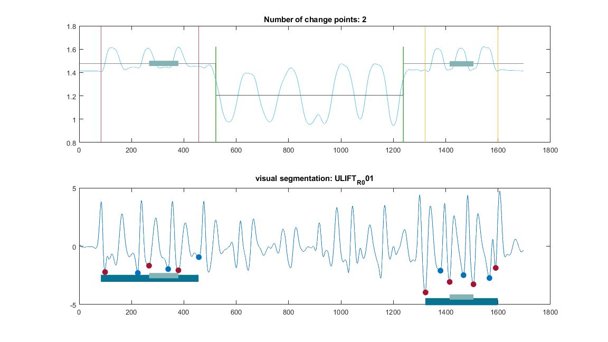
ULIFT_R-003.mvnx: Segment middle arm movement phase 1 ULIFT_R-003.mvnx: Please select peaks phase 1 ERROR: BC_001 at TIMEPOINT: T0 in FILENAME: ULIFT_R_003 Interrupted by figure deletion LINE: ULIFT_R_L-001.mvnx: Segment middle arm movement phase 1
ULIFT_R_L-003.mvnx: Segment middle arm movement phase 1
ULIFT_R_R-001.mvnx: Segment middle arm movement phase 1
ULIFT_R_R-002.mvnx: Segment middle arm movement phase 1
ULIFT_R_R-003.mvnx: Segment middle arm movement phase 1
middle phase 4
fprintf('\t \t %s: Segment middle arm movement phase 4 \n', content(file).name) [peakLoc.phase4, peakMag.phase4] = peakfinder(df.SenAcc.SensorFreeX(T_phase4), [],[],-1); peakLoc.phase4 = peakLoc.phase4 + startPhase4; grab_idx.phase4 = peakLoc.phase4(1:2:end); release_idx.phase4 = peakLoc.phase4(2:2:end); % throw error if the number of acceleration peaks % exceeds 7 %================================================ if size(peakLoc.phase4, 1) ~= 6 || strcmp(subj_name, 'BC_010') fprintf('\t \t %s: Please select peaks phase 4 \n', content(file).name) figure('Units','normalized','Position',[0.1 0.1 0.75 0.75]); subplot(2,1,1); % display the results of the change points plot(df.pos.positionZ,"Color",[77 190 238]/255,"DisplayName","Input data") hold on % Plot segments between change points plot(segmentMean,"Color",[64 64 64]/255,"DisplayName","Segment mean") %Plot change points x_rep = repelem(find(changeIndices),3); y = repmat([ylim(gca) missing]',nnz(changeIndices),1); plot(x_rep,y,"Color",[51 160 44]/255,"LineWidth",1,"DisplayName","Change points") title("Number of change points: " + nnz(changeIndices)) xline(T_phase1(1), "Color", '#A2142F', "DisplayName",'StrPh1') xline(T_phase1(end), "Color", '#A2142F', "DisplayName",'EndPh1') xline(T_phase4(1), "Color", '#EDB120',"LineWidth",1, "DisplayName",'StrPh4') xline(T_phase4(end), "Color", '#EDB120', "LineWidth",1,"DisplayName",'EndPh4') hold off subplot(2,1,2) plot(df.SenAcc.SensorFreeX); hold on % phase 4 yline_phase4 = ones(size(T_phase4)) * (min(peakMag.phase4) * 1.2); plot(T_phase4, yline_phase4, 'LineWidth',10, 'color', '#097392') plot(grab_idx.phase4, peakMag.phase4(1:2:end),'o', 'MarkerSize', 7.5, 'MarkerFaceColor', '#A2142F', 'MarkerEdgeColor', '#A2142F') plot(release_idx.phase4, peakMag.phase4(2:2:end), 'o', 'MarkerSize', 7.5, 'MarkerEdgeColor', '#0072BD', 'MarkerFaceColor', '#0072BD') if size(grab_idx.phase4,1) > 2 T_middle_phase4 = grab_idx.phase4(2):grab_idx.phase4(3); else T_middle_phase4 = grab_idx.phase4(1):grab_idx.phase4(2); end yline_middle_phase4 = ones(size(T_middle_phase4))*(min(peakMag.phase4) * 1.1); plot(T_middle_phase4, yline_middle_phase4, 'LineWidth',7.5, 'Color','#83B4B3') title("Manual segmentation Phase 4: " + fileName) [loc, ~] = ginput(2); if ~isempty(loc) % find the selected locations that are close to % the found peaks ind(1) = interp1(peakLoc.phase4, 1:length(peakLoc.phase4) ,loc(1),'nearest'); ind(2) = interp1(peakLoc.phase4, 1:length(peakLoc.phase4), loc(2), 'nearest'); T_middle_phase4 = peakLoc.phase4(ind(1)):peakLoc.phase4(ind(2)); clear loc close gcf warning('Number of peaks found ~= 6 \n peaks manually selected') else error('Number of peaks found ~= 6 \n NO peaks were selected phase 1') end else T_middle_phase4 = grab_idx.phase4(2):grab_idx.phase4(3); end %================================================ % % throw error if the number of acceleration peaks does not reach 6 % %================================================================= % % if size(peakLoc.phase4, 1) < 6 % fprintf('\t \t %s: Please select peaks phase 4 \n', content(file).name) % % figure('Units','normalized','Position',[0.1 0.1 0.75 0.75]); % subplot(2,1,1); % % display the results of the change points % % plot(df.pos.positionZ,"Color",[77 190 238]/255,"DisplayName","Input data") % hold on % % % Plot segments between change points % plot(segmentMean,"Color",[64 64 64]/255,"DisplayName","Segment mean") % % %Plot change points % x_rep = repelem(find(changeIndices),3); % y = repmat([ylim(gca) missing]',nnz(changeIndices),1); % plot(x_rep,y,"Color",[51 160 44]/255,"LineWidth",1,"DisplayName","Change points") % title("Number of change points: " + nnz(changeIndices)) % % xline(T_phase1(1), "Color", '#A2142F', "DisplayName",'StrPh1') % xline(T_phase1(end), "Color", '#A2142F', "DisplayName",'EndPh1') % % xline(T_phase4(1), "Color", '#EDB120',"LineWidth",1, "DisplayName",'StrPh4') % xline(T_phase4(end), "Color", '#EDB120', "LineWidth",1,"DisplayName",'EndPh4') % hold off % % subplot(2,1,2) % plot(df.SenAcc.SensorFreeX); hold on % % % phase 4 % yline_phase4 = ones(size(T_phase4)) * (min(peakMag.phase4) * 1.2); % plot(T_phase4, yline_phase4, 'LineWidth',10, 'color', '#097392') % % plot(grab_idx.phase4, peakMag.phase4(1:2:end),'o', 'MarkerSize', 7.5, 'MarkerFaceColor', '#A2142F', 'MarkerEdgeColor', '#A2142F') % plot(release_idx.phase4, peakMag.phase4(2:2:end), 'o', 'MarkerSize', 7.5, 'MarkerEdgeColor', '#0072BD', 'MarkerFaceColor', '#0072BD') % % yline_middle_phase4 = ones(size(T_middle_phase4))*(min(peakMag.phase4) * 1.1); % plot(T_middle_phase4, yline_middle_phase4, 'LineWidth',7.5, 'Color','#83B4B3') % % title("Manual segmentation Phase 4: " + fileName) % % [loc, ~] = ginput(2); % % if ~isempty(loc) % % find the selected locations that are close to % % the found peaks % ind(1) = interp1(peakLoc.phase4, 1:length(peakLoc.phase4) ,loc(1),'nearest'); % ind(2) = interp1(peakLoc.phase4, 1:length(peakLoc.phase4), loc(2), 'nearest'); % % T_middle_phase4 = peakLoc.phase4(ind(1)):peakLoc.phase4(ind(2)); % clear loc % close gcf % % % warning('Number of peaks found are less than 6 \n peaks manually selected') % else % error('Number of peaks found are less than 6 \n NO peaks were selected phase 1') % end % end % %=================================================================
ULIFT_L-001.mvnx: Segment middle arm movement phase 4 ULIFT_L-001.mvnx: Please select peaks phase 4 Warning: Number of peaks found ~= 6 \n peaks manually selected
ULIFT_L-002.mvnx: Segment middle arm movement phase 4
ULIFT_L-003.mvnx: Segment middle arm movement phase 4
ULIFT_R-001.mvnx: Segment middle arm movement phase 4 ULIFT_R-001.mvnx: Please select peaks phase 4 Warning: Number of peaks found ~= 6 \n peaks manually selected
ULIFT_R-002.mvnx: Segment middle arm movement phase 4 ULIFT_R-002.mvnx: Please select peaks phase 4 Warning: Number of peaks found ~= 6 \n peaks manually selected
ULIFT_R_L-001.mvnx: Segment middle arm movement phase 4
ULIFT_R_L-003.mvnx: Segment middle arm movement phase 4
ULIFT_R_R-001.mvnx: Segment middle arm movement phase 4
ULIFT_R_R-002.mvnx: Segment middle arm movement phase 4
ULIFT_R_R-003.mvnx: Segment middle arm movement phase 4
display the results
if plot_or_not figure('Units','normalized','Position',[0.1 0.1 0.75 0.75]); subplot(2,1,1); % display the results of the change points plot(df.pos.positionZ,"Color",[77 190 238]/255,"DisplayName","Input data") hold on % Plot segments between change points plot(segmentMean,"Color",[64 64 64]/255,"DisplayName","Segment mean") %Plot change points x_rep = repelem(find(changeIndices),3); y = repmat([ylim(gca) missing]',nnz(changeIndices),1); plot(x_rep,y,"Color",[51 160 44]/255,"LineWidth",1,"DisplayName","Change points") title("Number of change points: " + nnz(changeIndices)) xline(T_phase1(1), "Color", '#A2142F', "DisplayName",'StrPh1') xline(T_phase1(end), "Color", '#A2142F', "DisplayName",'EndPh1') yline = segmentMean(T_middle_phase1(1):T_middle_phase1(end)); plot(T_middle_phase1, yline, 'LineWidth',7.5, 'Color','#83B4B3') xline(T_phase4(1), "Color", '#EDB120',"LineWidth",1, "DisplayName",'StrPh4') xline(T_phase4(end), "Color", '#EDB120', "LineWidth",1,"DisplayName",'EndPh4') yline = segmentMean(T_middle_phase4(1):T_middle_phase4(end)); plot(T_middle_phase4, yline, 'LineWidth',7.5, 'Color','#83B4B3') hold off %phase 1 subplot(2,1,2) yline_phase1 = ones(size(T_phase1)) * (min(peakMag.phase1) * 1.2); plot(df.SenAcc.SensorFreeX); hold on plot(T_phase1, yline_phase1, 'LineWidth',10, 'Color', '#097392') plot(grab_idx.phase1, peakMag.phase1(1:2:end),'o', 'MarkerSize', 7.5, 'MarkerFaceColor', '#A2142F', 'MarkerEdgeColor', '#A2142F') plot(release_idx.phase1, peakMag.phase1(2:2:end), 'o', 'MarkerSize', 7.5, 'MarkerEdgeColor', '#0072BD', 'MarkerFaceColor', '#0072BD') yline_middle_phase1 = ones(size(T_middle_phase1))* (min(peakMag.phase1) * 1.1); plot(T_middle_phase1, yline_middle_phase1, 'LineWidth',7.5, 'Color','#83B4B3') % phase 4 yline_phase4 = ones(size(T_phase4)) * (min(peakMag.phase4) * 1.2); plot(T_phase4, yline_phase4, 'LineWidth',10, 'color', '#097392') plot(grab_idx.phase4, peakMag.phase4(1:2:end),'o', 'MarkerSize', 7.5, 'MarkerFaceColor', '#A2142F', 'MarkerEdgeColor', '#A2142F') plot(release_idx.phase4, peakMag.phase4(2:2:end), 'o', 'MarkerSize', 7.5, 'MarkerEdgeColor', '#0072BD', 'MarkerFaceColor', '#0072BD') yline_middle_phase4 = ones(size(T_middle_phase4))*(min(peakMag.phase4) * 1.1); plot(T_middle_phase4, yline_middle_phase4, 'LineWidth',7.5, 'Color','#83B4B3') title("visual segmentation: " + fileName) end %disp(' ')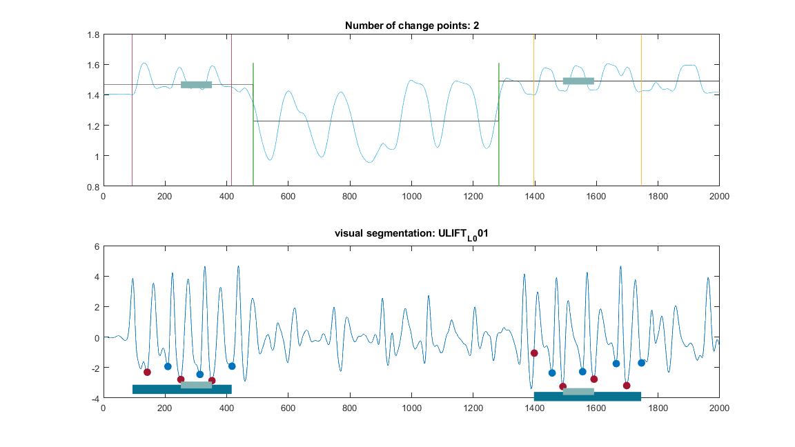
 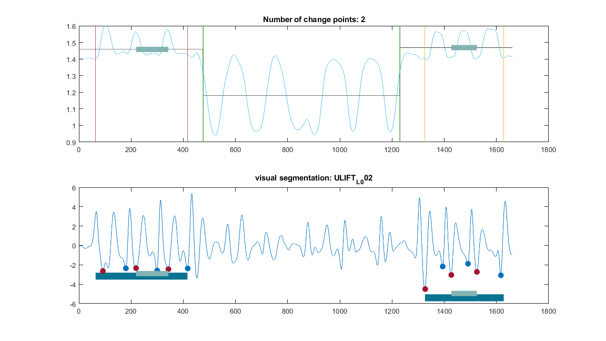 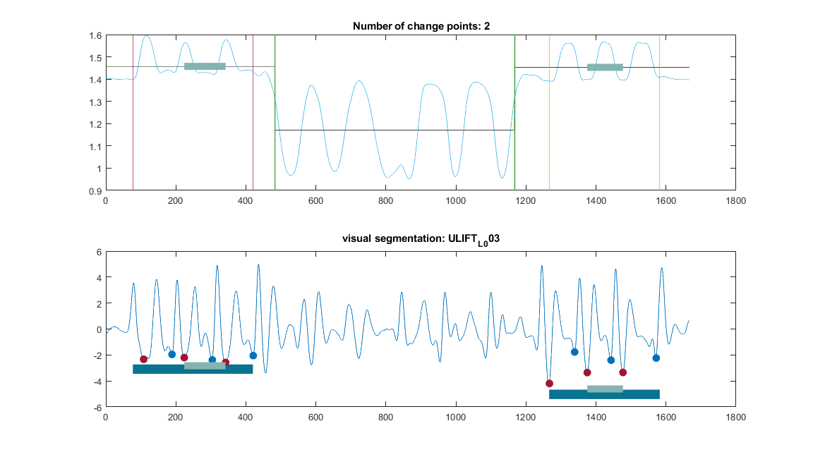 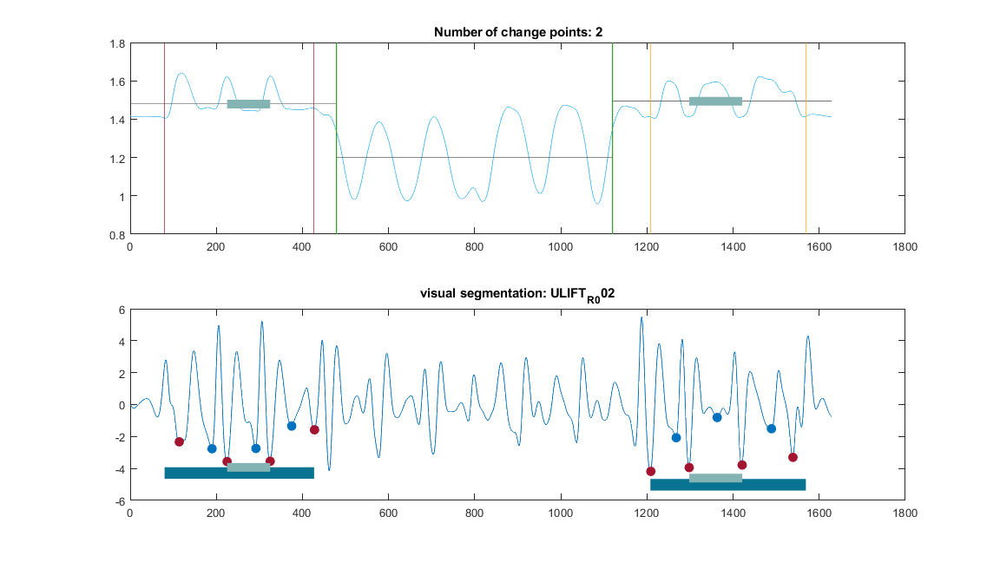 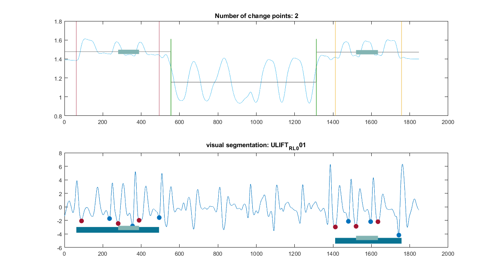 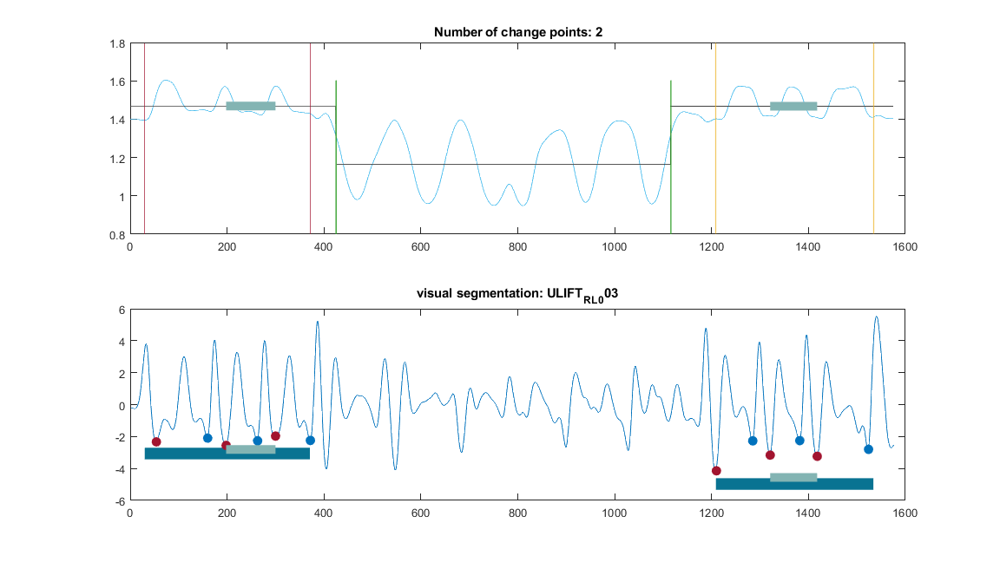 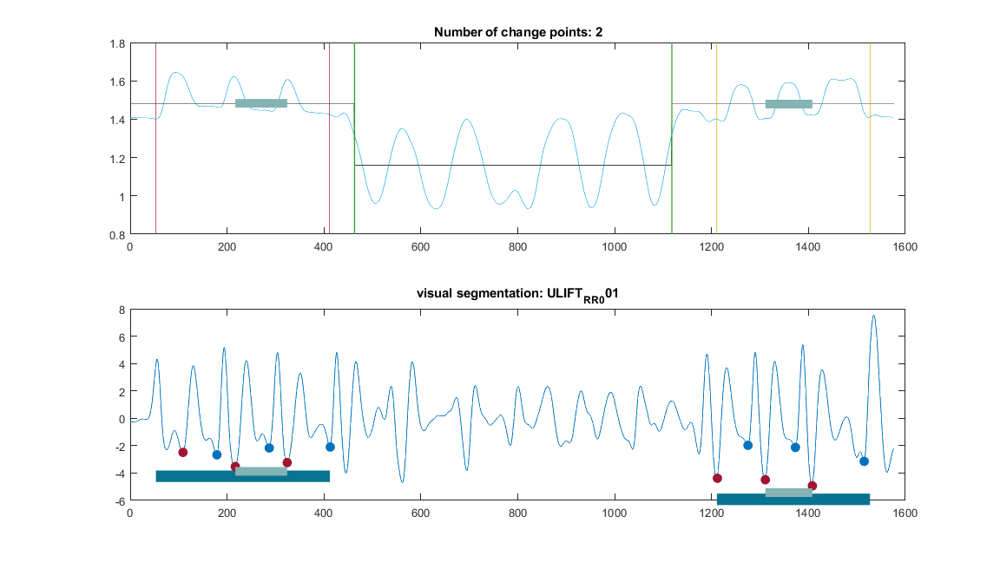 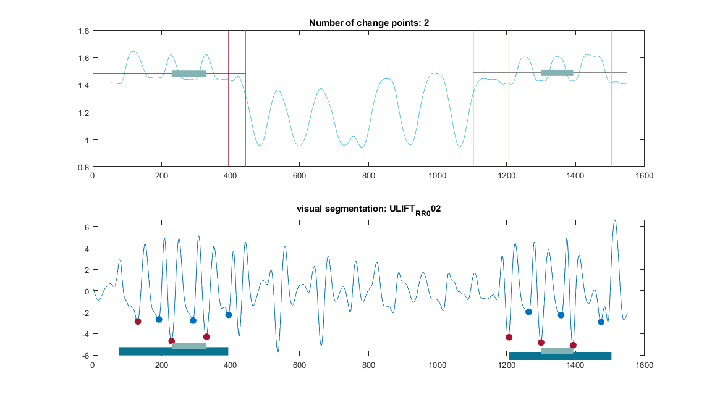 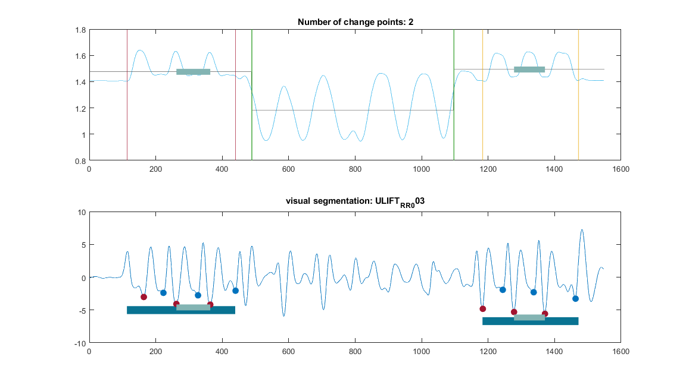
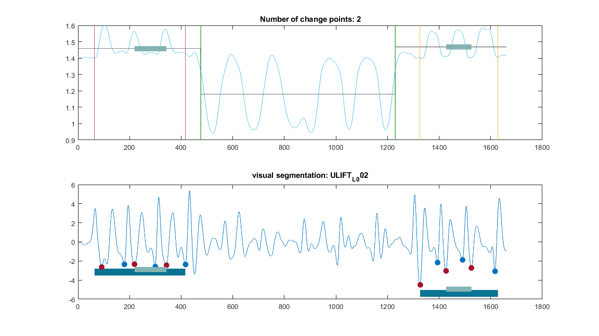 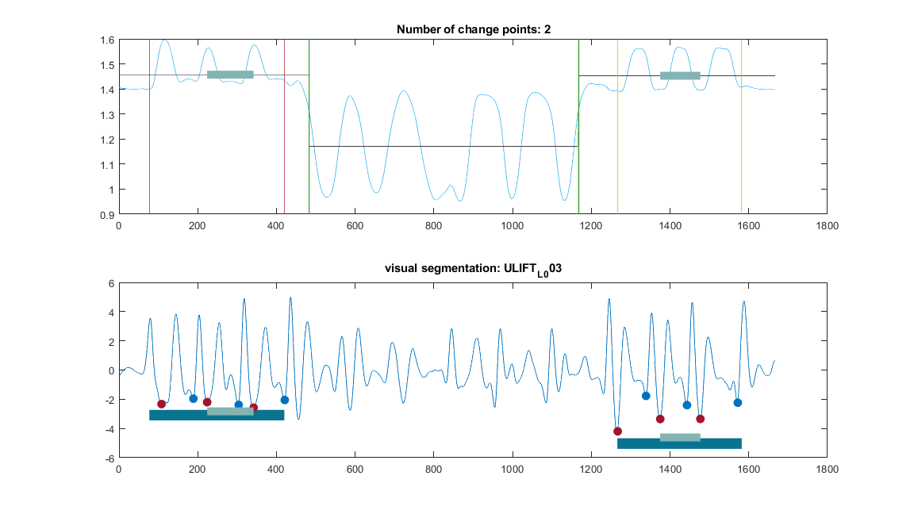 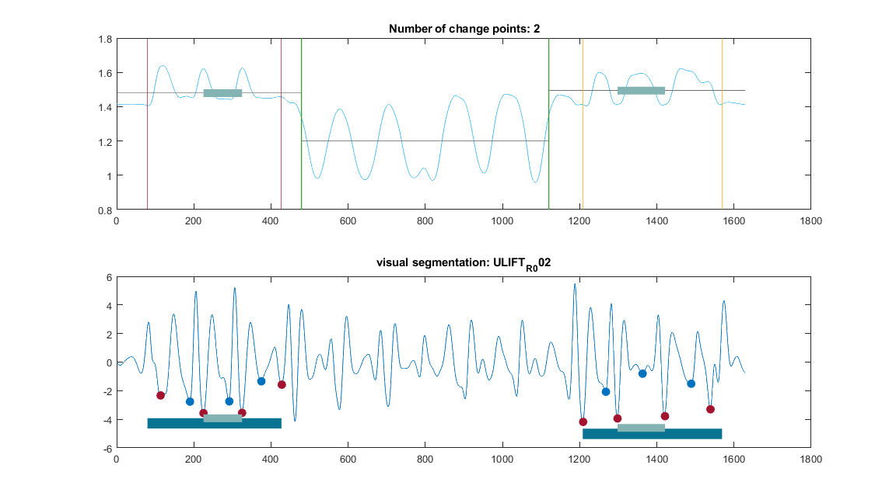 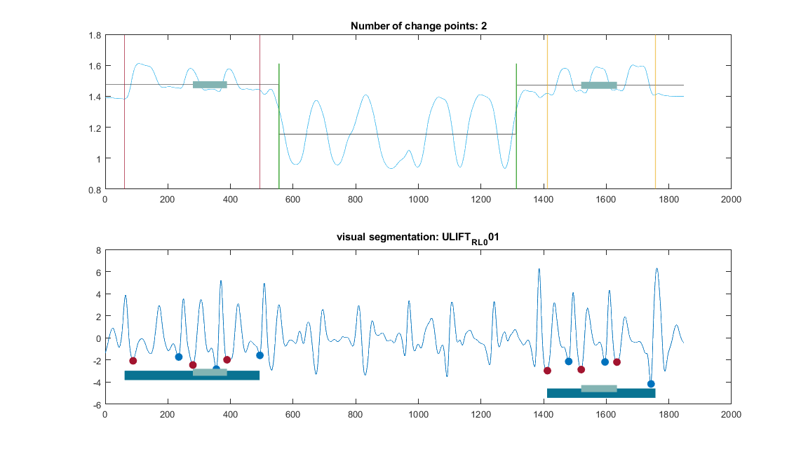 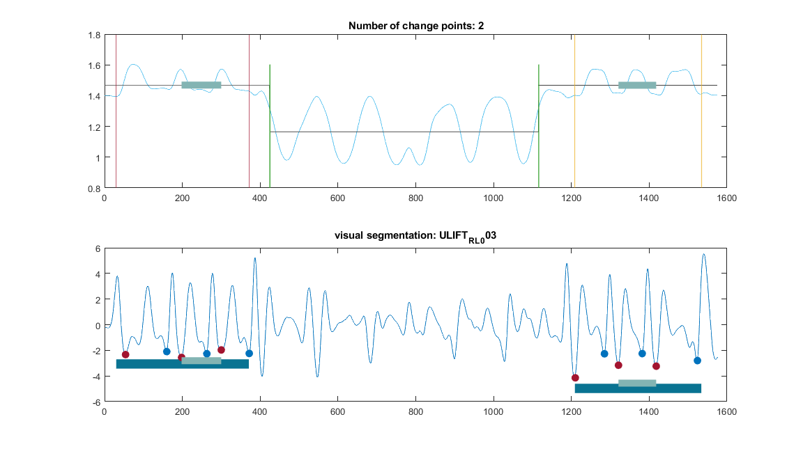 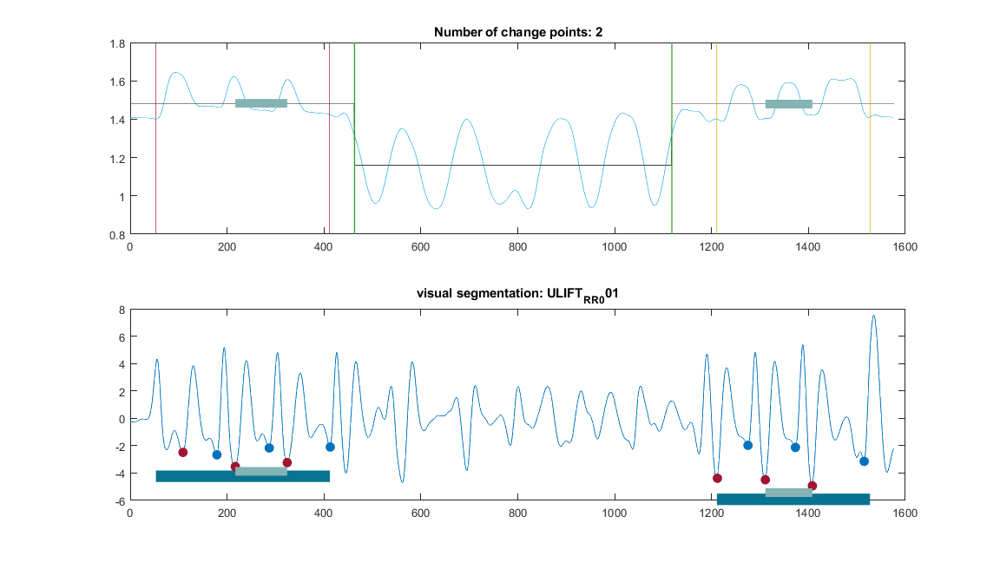 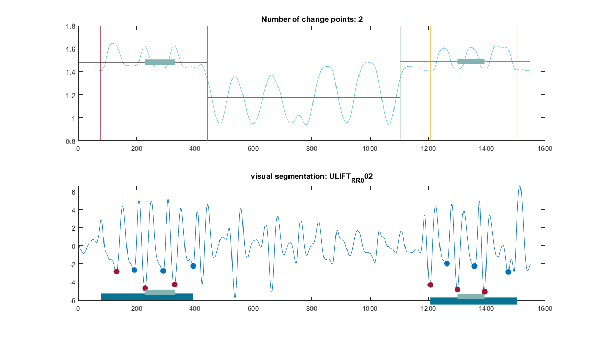 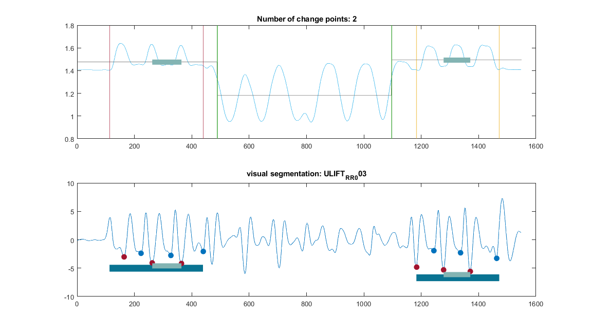 extract relevant kinematics
fprintf('\t\t %s: Extract relevant kinematics \n', fileName) % initialise joint names jointNames = ['Scapula', "Glenohumeraal", "Elbow", "Wrist"]; for jnt = 1:4 % initiation of joint names IK_X = [jointNames{jnt}, '_abbuction']; IK_Y = [jointNames{jnt}, '_rotation']; IK_Z = [jointNames{jnt}, '_flexion']; Data_out.(Timepoint).phase1.(arm).(IK_X)(:, counter) = normalisation(jointData(jointNo(jnt)).jointAngle(:, 1), T_middle_phase1); Data_out.(Timepoint).phase1.(arm).(IK_Y)(:, counter) = normalisation(jointData(jointNo(jnt)).jointAngle(:, 2), T_middle_phase1); Data_out.(Timepoint).phase1.(arm).(IK_Z)(:, counter) = normalisation(jointData(jointNo(jnt)).jointAngle(:, 3), T_middle_phase1); Data_out.(Timepoint).phase4.(arm).(IK_X)(:, counter) = normalisation(jointData(jointNo(jnt)).jointAngle(:, 1), T_middle_phase4); Data_out.(Timepoint).phase4.(arm).(IK_Y)(:, counter) = normalisation(jointData(jointNo(jnt)).jointAngle(:, 2), T_middle_phase4); Data_out.(Timepoint).phase4.(arm).(IK_Z)(:, counter) = normalisation(jointData(jointNo(jnt)).jointAngle(:, 3), T_middle_phase4); end % Trunk data trunk = jointData(2).jointAngle + jointData(3).jointAngle + jointData(4).jointAngle; %+ jointData(5).jointAngle; Trunk_lateroflexion = trunk(:,1); Trunk_rotation = trunk(:,2); Trunk_flexion = trunk(:,3); % initiation of trunk names IK_X = 'Trunk_lateroflexion'; IK_Y = 'Trunk_rotation'; IK_Z = 'Trunk_flexion'; Data_out.(Timepoint).phase1.(arm).(IK_X)(:, counter) = normalisation(trunk(:,1), T_middle_phase1); Data_out.(Timepoint).phase1.(arm).(IK_Y)(:, counter) = normalisation(trunk(:, 2), T_middle_phase1); Data_out.(Timepoint).phase1.(arm).(IK_Z)(:, counter) = normalisation(trunk(:, 3), T_middle_phase1); Data_out.(Timepoint).phase4.(arm).(IK_X)(:, counter) = normalisation(jointData(jointNo(jnt)).jointAngle(:, 1), T_middle_phase4); Data_out.(Timepoint).phase4.(arm).(IK_Y)(:, counter) = normalisation(jointData(jointNo(jnt)).jointAngle(:, 2), T_middle_phase4); Data_out.(Timepoint).phase4.(arm).(IK_Z)(:, counter) = normalisation(jointData(jointNo(jnt)).jointAngle(:, 3), T_middle_phase4);
ULIFT_L_001: Extract relevant kinematics
ULIFT_L_002: Extract relevant kinematics
ULIFT_L_003: Extract relevant kinematics
ULIFT_R_001: Extract relevant kinematics
ULIFT_R_002: Extract relevant kinematics
ULIFT_R_L_001: Extract relevant kinematics
ULIFT_R_L_003: Extract relevant kinematics
ULIFT_R_R_001: Extract relevant kinematics
ULIFT_R_R_002: Extract relevant kinematics
ULIFT_R_R_003: Extract relevant kinematics
clear certain variables
clear peakLoc peakMag % end% first check
end % end if movement && .mvnx catch ME % this section of code displays the subject and filenames % on which an error occured % formatSpec = '\t ERROR: %s at TIMEPOINT: %s in FILENAME: %s \n %s LINE: %s '; % fprintf(formatSpec, subj_name, Timepoint, fileName, ME.message, num2str(ME.stack.line)); % disp(' ') fprintf('\t\t ERROR: %s at TIMEPOINT: %s in FILENAME: %s \n \t\t %s LINE: %s \n', ... subj_name, Timepoint, fileName, ME.message) end end %end number of files %this section of code writes the peaks information to an excel file per subject % This also indicates whether the ULIFT task is segmented (1) or not % (0) % if strcmp(Timepoint, 'T0') % T = table(ppID, filename, Tpoint, Phase1, Phase4, run); % writetable(T, fullfile(path.table, [subj_name, '.xlsx'])) % else % tablefile = fullfile(path.table, [subj_name, '.xlsx']); % T_orig = readtable(tablefile); % % T_new = table(ppID, filename, Tpoint, Phase1, Phase4, run); % T = [T_orig; T_new]; % writetable(T, fullfile(path.table, [subj_name, '.xlsx'])) % end end% end check if subject path exists
Processing: BC_001 at Timepoint: T0....... current directory changed: C:\Users\u0117545\KU Leuven\An De Groef - DATA\BC_001\Xsens\T0\Reproces
Save data
%-------------- if exist('Data_out','var') if exist(path.out,'file') load(path.out) end [Data.(subj_name).(Timepoint)] = Data_out.(Timepoint); save(path.out,'Data') clear Data Data_out end fprintf('*********Finished %s **********\n', subj_name) %close all
*********Finished BC_001 **********
end %end subjects cd("C:\Users\u0117545\Documents\GitHub\ULIFT_BC\ULIFT")
plot joint angle data
subj_name = 'BC_020'; arm = 'L' JointAngles = fieldnames(Data.(subj_name).T1.phase1.L);
figure('Units','normalized','Position',[0.1 0.1 0.75 0.75]); p = tiledlayout('flow', 'TileSpacing','compact'); title(p,['Phase 1 Average left and right ', (Timepoint)]) xlabel(p,'% movement') ylabel(p,['Joint angle', char(176)])
for jnt = 1:length(JointAngles) L.Phase1.(JointAngles{jnt}) = Data.(subj_name).T1.phase1.L.(JointAngles{jnt}); R.Phase1.(JointAngles{jnt}) = Data.(subj_name).T1.phase1.R.(JointAngles{jnt});
nexttile
plot(L.Phase1.(JointAngles{jnt}), 'DisplayName', "Avg Left")
hold on
plot(R.Phase1.(JointAngles{jnt}), 'DisplayName', "Avg Right")
xlim([0, 100]) [PlotTitle] = regexprep(JointAngles{jnt}, '_', ' ');
title(PlotTitle)
end%diary off